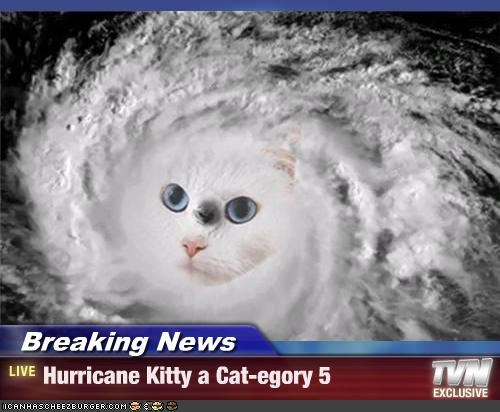
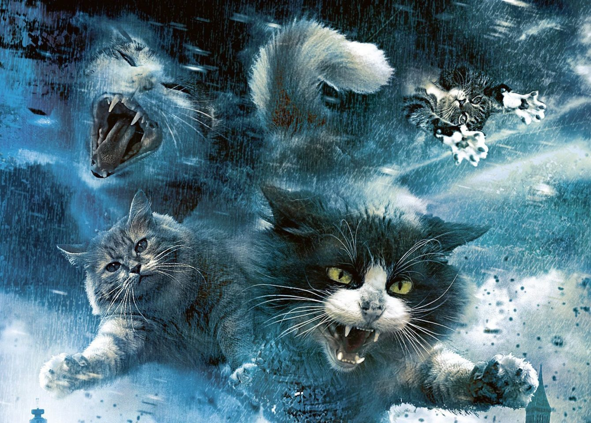

O GATO TORNADO

Os riscos de catástrofes são absurdamente maiores para quem tem mais de um gato de estimação
Tendo em vista os fatos é recomendável que as pessoas não criem gatos em casa
Tendo em vista os fatos é recomendável que as pessoas não criem gatos em casa